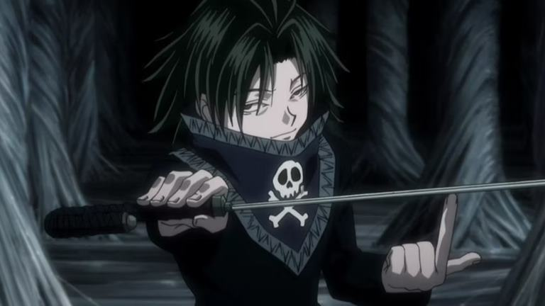
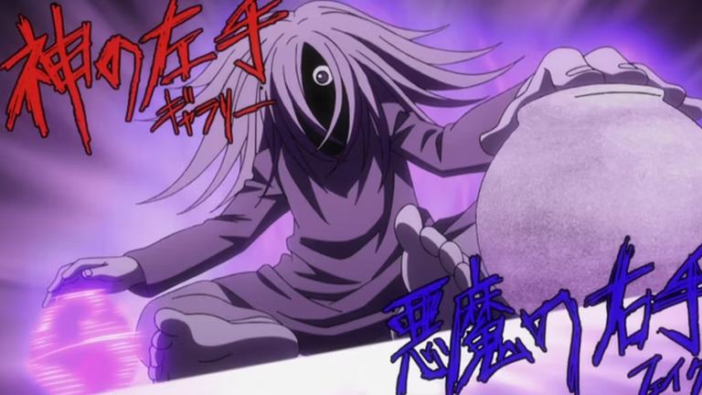

A trupe fantama do anime Hunter x Hunter
Genei Ryodan, que traduzindo é trupe fantama, é o mais famoso grupo de criminosos que se tem notícia no universo de HxH. É composto por 13 membros, sendo dividios como 12 patas e a cabeça.
Eles são famosos por participarem de grandes assaltos e assassinatos, como o massacre ao clã Kuruta e o assalto ao Leilão de York Shin. Algo muito importante em que o grupo segue, é a regra da moeda. Com a mesma a determinação é imposta sobre qualquer necessidade, afim de evitar conflitos entre os membros.
A Genei Ryodan foi fundada na Cidade Meteoro por Chrollo Lucifer.Essa cidade é um lugar completamente isolado do mundo, onde pode ser jogado qualquer tipo de lixo, inclusive hunanos, por isso a cidade é cheia de crianças abandonadas pelos pais e lá todo mundo se conhece e são ligados por um laço muito forte.
Os membros
Todos os membros têm uma tatuagem de uma grande aranha negra com 12 patas em seu corpo, podendo ser em qualquer parte, tendo um número de 1 a 13 pintado bem do meio dela, sendo o número de identificação do membro. Todos possuem a tatuagem, porém nem todas foram reveladas ainda.
Chrollo Lucifer - Líder #?
Chrollo Lulcifer, ou Kuroro Lúcifer é o líder da organização, comandando a Trupe desde o início, como foi ele que a criou.
Chrollo é muito forte e seu Nen é do estilo Especialização, podendo roubar técnicas de seus adversários através de seu livro de Nen. Sua tatuagem da Trupe ainda não foi revelada.
Hisoka Morrow - #4
Hisoka é o "falso membro" da Genei Ryodan, forjando uma tatuagem de aranha com o número #4 com sua habilidade de mudar as texturas das coisas. Ele entrou para a Trupe com o objetivo de lutar contra o líder Chrollo, já que o mesmo é viciado em lutas contra pessoas poderosas.
Dentro da Ryodan, ele observava Chrollo e esperava o momento certo para lutar contra ele e quando achou que estava na hora, o chamou para lutar, porém o homem já não podia mais usar seu Nen graças a uma maldição de Kurapika, logo após deixou a Trupe.
Feitan - #?
Feitan mostrou ser incrivelmente forte em sua luta contra a Chimera Ant Zanzan, veio de Meteoro City, sendo um membro original da Genei. Sua principal função na Trupe torturar para extrair informações de prisioneiros. Sua tatuagem ainda não foi revelada em seu corpo.
Shizuku - #8
Shizuku é o membro de número #8, sendo substituta de um antigo membro que foi morto por Silva Zoldyck.
Sua habilidade é considerada de extrema importância ao Ryodan, ao ponto de dizerem que não podem perdê-la. Basicamente, ela invoca um aspirador de pó chamado Deme-Chan que pode aspirar qualquer coisa que não tenha vida, sendo muito útil para esconder as provas dos crimes, também pode trazer devolta a última coisa aspirada.
Machi - #?
Machi é uma mulher muito forte, na verdade a mais forte do grupo. Hisoka tem uma grande admiração por ela e suas habilidades, a ponto de querer se machucar de propósito só para ver seus poderes. Ela é um dos membros originais que vieram de Meteoro City.
Phincks - #?
Phinks é um dos mais fortes fisicamente do Genei Ryodan, estando em segundo lugar na queda de braço do grupo, apenas atrás de Uvogin. Também veio de Meteoro City, sendo um membro original da Trupe. Para Phinks, apenas membros do Ryodan são importantes, matando sem remorso qualquer outra pessoa.
O poder de Phinks é bem interessante, basicamente dá socos que têm a forca determinada por quantas vezes gira seu braço.
Nobunaga - #1
Nobunaga é o número #1 e o melhor amigo de Uvogin. Ele é um mestre com espadas.
Nobunaga gostava de combater oponentes junto de Uvogin, como os dois faziam uma bela dupla e se conheciam muito antes da Ryodan existir, tendo um laço muito forte e de anos.
Franklin - #?
Franklin é um homem enorme e cheio de cicatrizes, o que lembra o Frankenstein, uma referência em seu nome. Ele é inquestionavelmente leal a Trupe, como estava disposto a matar os membros e reconstruir a Genei.
Suas habilidades saem de seus dedos, quando eles se abrem e soltam balas, como uma arma para cada dedo.
Koltopi - #?
Koltopi vive escondido na Genei Ryodan. Ele foi morto por Hisoka no mangá.
Suas habilidades de Materialização consistem em criar réplicas perfeitas do que toca, podendo fazer até 50 cópias por vez. Suas réplicas só duram até 24 horas e ele pode saber a localização das falsificações tocando nas originais. Koltopi é útil para esconder o grupo, como quando copiou vários prédios em volta do esconderijo da Trupe para retardar o inimigo e também disfarçar roubos, como fez no assalto ao Leilão de York Shin.
Shalnark - #6
Shalnark é o número #6 do grupo e seu Nen é do estilo Manipulação, permitindo que ele manipule um celular que pode controlar uma pessoa ao espetar uma antena em forma de morcego na mesma, fazendo com que ela obedeça todos os seus comandos. Ele chama suas vítimas de "brinquedos", eventualmente as chamando de "brinquedos quebrados" quando morrem
Shalnark é fiel ao grupo e não se importa de morrer se for para o bem do Ryodan. Ele teve sua habilidade roubada por Chrollo e por isso acabou morrendo para Hisoka, pois não pode revirar ao ataque.
Pakunoda - #9
Pakunoda é um dos membros mais importantes da Trupe, junto com Shizuku. Suas habilidades de Especialização são raras e de muita utilidade na Ryodan, como Shalnark disse que não podem perder as duas mulheres do grupo. Ela é um dos membros que está geralmente ao lado de Chrollo para protegê-lo e ajudá-lo.
Suas habilidades são muito interessantes, ela pode ler mentes apenas tocando o corpo da pessoa, podendo ler tudo o que quiser de seu consciente. Ela também pode enviar suas memórias através de balas de Nen em uma arma que carrega consigo.
Ela morreu por conta de Kurapika, que a incapacitou de usar Nen com sua maldição e a mesma usou sua aura para passar suas memórias do que tinha acontecido com Chrollo, para assim os membros não pensarem que o chefe tinha abandonado o grupo.
Bonolenov - #?
Bonolenov é um membro misterioso, não se sabe muito dele, exceto que ele veio de uma tribo que tem vários buracos no corpo e suas habilidades são geradas através deles. Quando ele se mexe em uma espécie de dança, seu corpo solta sons que ele usa como arma.
Bonolenov usa faixas em seu corpo para esconder os buracos, além de um par de luvas de boxer vermelhas. Diferente dos outros membros, Bono (assim apelidado pela Trupe) não gosta de lutar e matar, apenas quando o provocam, exibindo confiança caso isso aconteça.
Uvogin - #11
Uvogin é o mais forte fisicamente da Trupe Fantasma. Tem extrema confiança em sua força, tanto que geralmente acaba subestimando seus inimigos.
Ele foi a primeira vítima da vingança de Kurapika, morrendo por suas correntes a luz da lua. Mesmo acorrentado e com ameaças de morte, Uvo não falou nada sobre a Genei Ryodan para Kurapika, mostrando que é extremamente fiel.
Uvo é muito poderoso, porém fica ainda mais determinado quando tem alguém para proteger. Ele também era muito cruel com suas vítimas, não tendo nenhum remorso em matá-las.
Kalluto Zoldyck - #4
Kalluto é o caçula da família de assassinos profissionais Zoldyck. O menino entrou na Trupe Fantasma para trazer seu irmão devolta para casa, substituindo o antigo número #4, que era Hisoka.
Suas habilidades são a base de pequenos pedaços de papéis que podem arrancar partes do corpo junto com seu leque.
Subistituição
O grupo tem um sistema de substituição de membro bem simples. Basicamente, se alguém de fora derrotar qualquer membro dentro da Trupe, essa pessoa terá o direito de tomar o lugar dela, como aconteceu com Hisoka, que derrotou Omokage e tomou seu lugar. Mas também pode haver casos como o de Shizuku que substituiu um membro morto e Kalluto que entrou no lugar de Hisoka que havia deixado a Ryodan por conta própria.